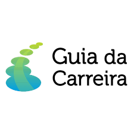
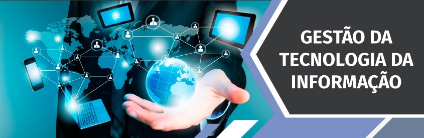
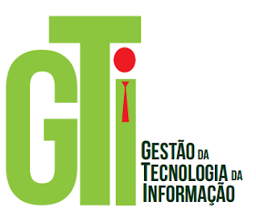

O mercado de Trabalho na Área de TI
Gestão da Tecnologia da Informação
Conheça a Gestão da Tecnologia da Informação, uma carreira promissora que oferece boas oportunidades de emprego!

A carreira de Gestão da Tecnologia da Informação está ligada à área de Informática, envolvendo a administração dos
recursos de infraestrutura física e lógica de ambientes informatizados. Na prática, esse profissional define parâmetros
de utilização de sistemas, cuida da implantação e da documentação rotinas, controla os níveis de serviço de sistemas operacionais
e banco de dados, gerencia os recursos humanos envolvidos nesses processos e faz a gestão dos sistemas implantados.
Quem faz o curso de Gestão da Tecnologia da Informação, assim como todo o pessoal que se capacita na área de TI em geral, encontra
um mercado aquecido e com bons salários.
A Gestão da Tecnologia da Informação tem se mostrado um território fértil para os profissionais que desejam se destacar no mercado de trabalho.
Para tanto, precisam apresentar um perfil multifacetado, com uma visão integrada do setor em que irão trabalhar e das outras áreas da empresa e amplo
conhecimento sobre o gerenciamento de projetos e processos relacionados à Tecnologia da Informação.
As empresas têm buscado, cada vez mais, obter mais segurança e eficiência em seus processos tecnológicos. Dessa forma, os profissionais especializados
nessa área podem atuar na informática em
geral, em organizações públicas e empresas privadas de grande, médio e pequeno porte, e desempenhar funções como
Coordenador de Sistemas de Tecnologia da Informação, Gerente de Projetos e Analista de TI. Sua principal responsabilidade é administrar e manter atualizado
todo o parque tecnológico da instituição para a qual atua.
Gestão da Tecnologia da Informação | Habilidades
Além de conhecer as principais técnicas de Gestão da Tecnologia da Informação,
o profissional que deseja atuar nesta área precisa apresentar algumas características e habilidades que são importantes
para o desempenho das suas funções em TI.
Nós listamos, logo abaixo, algumas delas.
Não deixe de conferir:
-
Liderança;
-
Capacidade de gerenciamento de recursos tecnológicos;
-
Gestão de projetos;
-
Habilidade para trabalhar em equipe;
-
Responsabilidade;
-
Ética;
-
Agilidade;
-
Conhecimento sobre técnicas de Gestão de Pessoas.
Oportunidades de emprego
O administrador é capaz de gerenciar recursos materiais
e informacionais de uma empresa. A ênfase em Gestão da Tecnologia da Informação auxiliará na coleta, seleção e processamento de informações em
diferentes instituições, empresas públicas/ privadas. Além disso, o egresso ganhará aptidão para definir a quantidade de utilização de sistemas,
gerenciar recursos humanos, implementar e documentar rotinas.
Algumas habilidades e competências são esperadas de um profissional formado em Administração - Tecnologia da Informação. Ele precisa saber trabalhar em grupo de forma democrática, lidar com conceitos e tomar boas decisões,
mesmo as mais complexas. Sabe olhar para fora e dentro da empresa em busca de boas referências que engrandecem o seu trabalho como administrador.
O especialista da área também é um bom gerenciador de conflitos.
